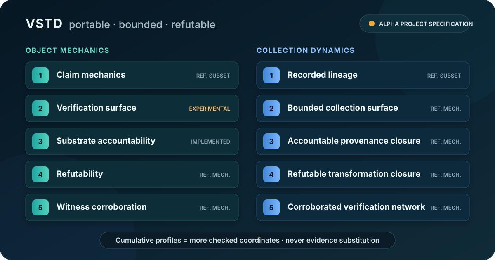

01 · CLAIM
Exact meaning
Subject, predicate, parameters, scope, and the statement that was actually checked.
VSTD packages bounded computational claims with their evidence, checking mechanisms, limits, refutation conditions, provenance, and reproducibility information. It does not replace native domain verifiers or strengthen their results.
VSTD makes computational claims:
UNKNOWN rather than being answered outside the checked boundary.A result travels with its meaning, evidence, limits, and failure routes so downstream humans and agents can draw conclusions without silently widening it.

VSTD records the minimum information another party needs to understand, reproduce, constrain, or overturn a computational claim.
Subject, predicate, parameters, scope, and the statement that was actually checked.
Inputs, outputs, mechanisms, provenance, checker identity, and trust roots.
Coordinates, resource ceilings, missing visibility, and explicit unknowns.
Reproduction, counterexample, adjudication, revocation, and downstream degradation.
VSTD evaluates bounded validity propositions about computational processes represented by software and evidence-bearing artifacts. Identity, popularity, and reputation alone add no verdict weight. TRUST, ROT, and RUST are formal semantic names, not acronyms or actor ratings; the reference Graph assurance log records them as evidence-bound events and can replay their embedded evidence and mechanisms offline. Architectural zero knowledge presumes no unevidenced proposition; cryptographic zero knowledge can enclose a confidential witness only through a named proof system bound to the exact program and predicate.
Exact artifact support moves edge by edge through a checked transformation bound to its inputs, output, Graph, and prerequisite support. It is never an actor rating.
Typed lifecycle evidence can require reassessment without rewriting an immutable historical result. Age alone is insufficient.
A checked descendant deviation traces over deduplicated recorded ancestors. BLAME requires localized responsibility; GUILT additionally requires an exact violated obligation. Neither follows from reachability alone.
The flagship demo is side-effect free. It runs checked specimens and exits successfully only when every defensive outcome matches its explicit invariant.
$ git clone https://github.com/TimeLordRaps/verifier.git
$ cd verifier && python -m pip install .
$ vstd demo
[DEMO OK] Valid-looking proof, wrong artifact → REJECTED
[DEMO OK] Bound exhausted without a false answer → ACCEPTED/UNKNOWN
[DEMO OK] Inflated verification-cost claim → REJECTED
[DEMO OK] Revoked ancestor behind valid descendants → GRAPH-CANDIDATE-0VSTD is a maintainer-led alpha project specification. Compatibility VSTD-4 and Graph paths remain NOT_ESTABLISHED candidates. Separate evidence-bound VSTD-4, VSTD-5, Graph-profile, and assurance-event paths rerun exact registered mechanisms from embedded evidence; no real external witness is claimed by this repository. The project has no demonstrated external adoption, independent implementation, interoperability deployment, or third-party security review.
Artifact-control boundary: freeze preserves exact bytes and sealing is not encryption. A thaw sidecar alone is unkeyed metadata and remains NOT_ESTABLISHED; clean or dirty status requires the actual supplied parent to verify as sealed with every recorded parent coordinate matching. This current comparison does not authenticate the historical copy operation or external continuity.
Release coordinate:
verifier-standard 1.2.0, released 2026-09-01. Use the
versioned GitHub release
for published artifacts and citation coordinates.